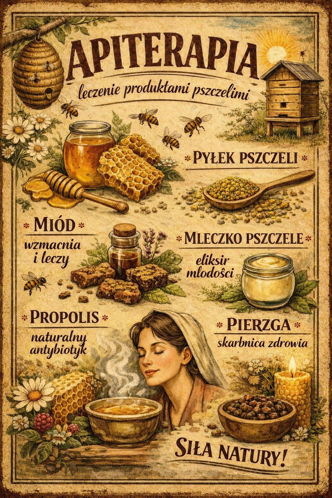

Apiterapia
Leczenie produktami pszczelimi
Usługi
Jak pracuję?
W swojej pracy wykorzystuję następujące metody terapeutyczne:
- Hirudoterapia – terapia pijawkami lekarskimi
- Fitoterapia – wsparcie ziołowe
- Bańki ogniowe
- Homeopatia
- Terapia wodorem
- Lampy lecznicze
- Suplementacja (indywidualna i rozsądna)
- Olejki eteryczne
- Apiterapia
- Inne metody wspierające
Dla zwierząt terapie z zakresu hirudoterapii oraz fitoterapii prowadzone są z uwzględnieniem fizjologii, zachowania, stanu zdrowia oraz bezpieczeństwa.